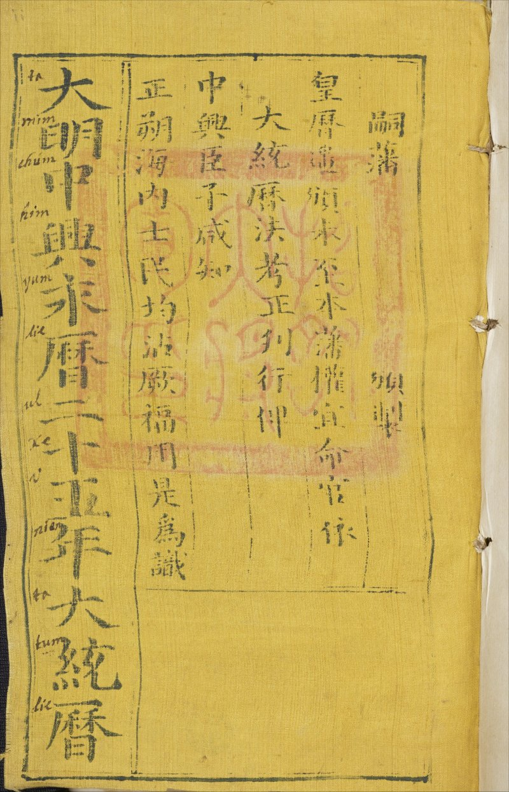
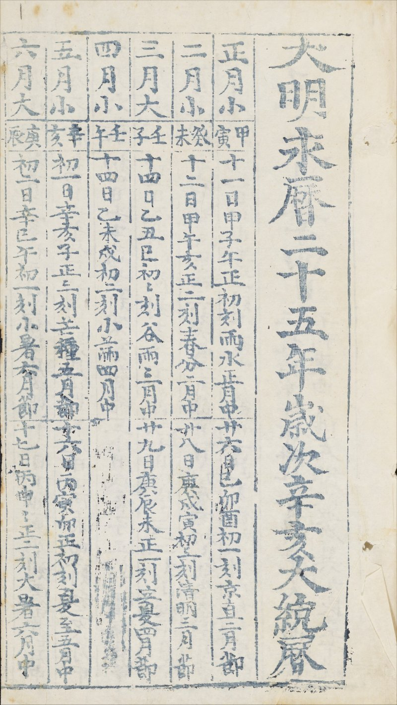

Datong Calendar for the 25th Year of the Yongli Reign (1671)
Photo source: Bodleian Library Sinica 58
Photo copyright holder: © Bodleian Libraries, University of Oxford (This page is not associated with the copyright holder)
Terms of Use: CC BY-NC 4.0 license. For more information, please see https://digital.bodleian.ox.ac.uk/terms/
Note: The images shown below have been cropped and resized from the originals. Only a few pages containing the information of conjunctions, intercalary months and solar terms are shown here. The digital version of the whole book can be obtained from the source link above.
Photo

Text
大 明 中 興 永 曆 二 十 五 年 大 統 曆
嗣藩 頒製
皇曆遙頒未至本藩權宜命官依
大統曆法考正刊行俾
中興臣子咸知
正朔海內士民均沾厥福用是為識
Translation
The book title is Datong Calendar for the Twenty-Fifth Year of the Yongli Reign in the Great Ming Dynasty.
The text roughly states that the emperor's calendar for the year had not arrived and the Prince of Yanping (governor of the Zheng state) expediently ordered officials to produce and promulgate the calendar according to the Datong system, so that the civilians under his governance could use it for their daily lives.
Note: The emperor's calendar of the Southern Ming dynasty was no longer produced after the death of the Youngli emperor in 1662. This calendar became the de facto official calendar of the state.
Photos


Text
| 大明永曆二十五年歲次辛亥大統曆 | |||
| 正月小 | 甲寅 | 十一日甲子午正初刻雨水正月中 | 廿六日己卯酉初一刻京直二月節 |
| 二月小 | 癸未 | 十二日甲午亥正二刻春分二月中 | 廿八日庚戌寅初三刻清明三月節 |
| 三月大 | 壬子 | 十四日乙丑巳初初刻谷雨三月中 | 廿九日庚辰未正一刻立夏四月節 |
| 四月小 | 壬午 | 十四日乙未戌初二刻小滿四月中 | |
| 五月小 | 辛亥 | 初一日辛亥子正三刻芒種五月節 | 十六日丙寅卯正初刻夏至五月中 |
| 六月大 | 庚辰 | 初二日辛巳午初一刻小暑六月節 | 十七日丙申申正二刻大暑六月中 |
| 七月小 | 庚戌 | 初二日辛亥亥初三刻立秋七月節 | 十八日丁卯寅初初刻處暑七月中 |
| 八月大 | 己卯 | 初四日壬午辰正一刻白露八月節 | 十九日丁酉未初二刻秋分八月中 |
| 九月大 | 己酉 | 初四日壬子酉正三刻寒露九月節 | 二十日戊辰子正初刻霜降九月中 |
| 十月小 | 己卯 | 初五日癸未卯初一刻立冬十月節 | 二十日戊戌巳正二刻小雪十月中 |
| 十一月大 | 戊申 | 初六日癸丑申初三刻大雪十一月節 | 廿一日戊辰亥初初刻冬至十一月中 |
| 十二月大 | 戊寅 | 初七日甲申丑正一刻小寒十二月節 | 廿二日己亥辰初二刻大寒十二月中 |
| 凡三百五十四日 (divination content omitted) | |||
Translation
| Calendar Dates for the 25th Year of the Yongli Reign (sexagenary year Xin Hai) | |||
| 1 S | Jia Yin | Z1: 11, Jia Zi, (12,0) | J2: 26, Ji Mao, (17,1) |
| 2 S | Gui Wei | Z2: 12, Jia Wu, (22, 2) | J3: 28, Geng Xu, (3,3) |
| 3 L | Ren Zi | Z3: 14, Yi Chou, (9,0) | J4: 29, Geng Chen, (14,1) |
| 4 S | Ren Wu | Z4: 14, Yi Wei, (19,2) | |
| 5 S | Xin Hai | J5: 1, Xin Hai, (0,3) | Z5: 16, Bing Yin, (6,0) |
| 6 L | Geng Chen | J6: 2, Xin Si, (11,1) | Z6: 17, Bing Shen, (16,2) |
| 7 S | Geng Xu | J7: 2, Xin Hai, (21,3) | Z7: 18, Ding Mao, (3,0) |
| 8 L | Ji Mao | J8: 4, Ren Wu, (8,1) | Z8: 19, Ding You, (13,2) |
| 9 L | Ji You | J9: 4, Ren Zi, (18,3) | Z9: 20, Wu Chen, (0,0) |
| 10 S | Ji Mao | J10: 5, Gui Wei, (5,1) | Z10: 20, Wu Xu, (10,2) |
| 11 L | Wu Shen | J11: 6, Gui Chou, (15,3) | Z112: 21, Wu Chen, (21,0) |
| 12 L | Wu Yin | J12: 7, Jia Shen, (2,1) | Z12: 22, Ji Hai, (7,2) |
| Total Number of Days: 354 (divination content omitted) | |||
Column Description
- The first column is the Chinese month number followed by either S (short month) or L (long month). The S months had 29 days and L months had 30 days. The total number of days in the year was therefore 30NL + 29NS, where NL is the number of L months and NS is the number of S months. The calculated number matches the value given in the last row of the table.
- The second column gives the sexagenary date cycle of the first day (conjunction day) in the Chinese month.
- The last two columns list the dates and times of the solar terms in the year.
- Solar terms are labelled using the convention on the solar term page. They are shorthand notations of the alternative Chinese names. For example, Z5 refers to the Zhongqi (major solar term) associated with month 5 (五月中), which is Summer Solstice (夏至); J6 refers to the Jieqi (minor solar term) associated with month 6 (六月節), which is Slight Heat (小暑).
- The date of a solar term is given by a number indicating the date in the Chinese month and the sexagenary date cycle. For example, "J2: 26, Ji Mao" means that J2 was on the 26th day (of month 1) and its sexagenary date cycle was Ji Mao.
- Time is indicated by two numbers (x,y), where x is an integer between 0 and 23 and y is an integer between 0 and 4. If y≠4, (x,y) means that the time is between 14.4y minutes and 14.4(y+1) minutes past x o'clock. If y=4, (x,y) means that the time is between 57.6 minutes past x o'clock and (x+1) o'clock. For exampe, (20,3) refers to the time interval between 20:43:12 and 20:57:36; (2,4) refers to the time interval between 2:57:36 and 3:00:00.
- Hence, "J10: 5, Gui Wei, (5,1)" in the 10S row means that J10 occurred in the time interval between 5:14:24 and 5:28:48 on the 5th day of month 10 and the sexagenary date cycle was Gui Wei. This date corresponds to November 6th, 1671 in the Gregorian calendar.
Note: According to the calculation of the Datong system, The conjunction associated with the first month (New Year day) was on a Gui Chou day (February 9th, 1671), which was one day earlier than the Jia Yin day (February 10th, 1671) indicated in the calendar. The other conjunction dates in the calendar match the calculation of the Datong system. All the dates and times of solar terms given in the calendar agree with the calculation of the Datong system.
Photos


Text
The last row in the photo is omitted in the following table.
| 紀年 | ||||||
| 永 曆 | 廿五年 | 辛亥金 | 一歲豬 | 男二宮 | 女一宮 | |
| 廿四年 | 庚戌金 | 二歲狗 | 男三宮 | 女九宮 | ||
| 廿三年 | 己酉土 | 三歲雞 | 男四宮 | 女八宮 | 閏十二月 | |
| 廿二年 | 戊申土 | 四歲猴 | 男五宮 | 女七宮 | ||
| 廿一年 | 丁未水 | 五歲羊 | 男六宮 | 女六宮 | 閏四月 | |
| 二十年 | 丙午水 | 六歲馬 | 男七宮 | 女五宮 | ||
| 十九年 | 乙巳火 | 七歲蛇 | 男八宮 | 女四宮 | ||
| 十八年 | 甲辰火 | 八歲龙 | 男九宮 | 女三宮 | 閏六月 | |
| 十七年 | 癸卯金 | 九歲兔 | 男一宮 | 女二宮 | ||
| 十六年 | 壬寅金 | 十歲虎 | 男二宮 | 女一宮 | ||
| 十五年 | 辛丑土 | 十一歲牛 | 男三宮 | 女九宮 | 閏十月 | |
| 十四年 | 庚子土 | 十二歲鼠 | 男四宮 | 女八宮 | ||
| 十三年 | 己亥木 | 十三歲豬 | 男五宮 | 女七宮 | 閏正月 | |
| 十二年 | 戊戌木 | 十四歲狗 | 男六宮 | 女六宮 | ||
| 十一年 | 丁酉火 | 十五歲雞 | 男七宮 | 女五宮 | ||
| 十年 | 丙申火 | 十六歲猴 | 男八宮 | 女四宮 | 閏五月 | |
| 九年 | 乙未金 | 十七歲羊 | 男九宮 | 女三宮 | ||
| 八年 | 甲午金 | 十八歲馬 | 男一宮 | 女二宮 | ||
| 七年 | 癸巳水 | 十九歲蛇 | 男二宮 | 女一宮 | 閏六月 | |
| 六年 | 壬辰水 | 二十歲龍 | 男三宮 | 女九宮 | ||
| 五年 | 辛卯木 | 廿一歲兔 | 男四宮 | 女八宮 | ||
| 四年 | 庚寅木 | 廿二歲虎 | 男五宮 | 女七宮 | 閏十二月 | |
| 三年 | 己丑火 | 廿三歲牛 | 男六宮 | 女六宮 | ||
| 二年 | 戊子火 | 廿四歲鼠 | 男七宮 | 女五宮 | 閏三月 | |
| 元年 | 丁亥土 | 廿五歲豬 | 男八宮 | 女四宮 | ||
| 隆 武 | 二年 | 丙戌土 | 廿六歲狗 | 男九宮 | 女三宮 | |
| 元年 | 乙酉水 | 廿七歲雞 | 男一宮 | 女二宮 | 閏六月 | |
| 崇 禎 | 十七年 | 甲申水 | 廿八歲猴 | 男二宮 | 女一宮 | |
| 十六年 | 癸未水 | 廿九歲羊 | 男三宮 | 女九宮 | ||
| 十五年 | 壬午木 | 三十歲馬 | 男四宮 | 女八宮 | 閏十一月 | |
| 十四年 | 辛巳金 | 卅一歲蛇 | 男五宮 | 女七宮 | ||
Translation
The following table omits columns 4-6.
| Reign | Year | Sexagenary Year | Leap Month |
|---|---|---|---|
| Yongli | 25th | Xin Hai | |
| 24th | Geng Xu | ||
| 23rd | Ji You | 12 | |
| 22nd | Wu Shen | ||
| 21st | Ding Wei | 4 | |
| 20th | Bing Wu | ||
| 19th | Yi Si | ||
| 18th | Jia Chen | 6 | |
| 17th | Gui Mao | ||
| 16th | Ren Yin | ||
| 15th | Xin Chou | 10 | |
| 14th | Geng Zi | ||
| 13th | Ji Hai | 1 | |
| 12th | Wu Xu | ||
| 11th | Ding You | ||
| 10th | Bing Shen | 5 | |
| 9th | Yi Wei | ||
| 8th | Jia Wu | ||
| 7th | Gui Si | 6 | |
| 6th | Ren Chen | ||
| 5th | Xin Mao | ||
| 4th | Geng Yin | 12 | |
| 3rd | Ji Chou | ||
| 2nd | Wu Zi | 3 | |
| 1st | Ding Hai | ||
| Longwu | 2nd | Bing Xu | |
| 1st | Yi You | 6 | |
| Chongzhen | 17th | Jia Shen | |
| 16th | Gui Wei | ||
| 15th | Ren Wu | 11 | |
| 14th | Xin Si |
According to the calculation of the Datong system, the leap months in the 4th and 7th year of the Yongli reign were after the 11th and 7th month, respectively, and they are inconsistent with this table. Surprisingly, in the calendar for the 30th year of the Yongli reign and the calendar for the 31st year of the Yongli reign, the leap month in the 7th year of the Yongli reign is recorded to be after the 8th month, inconsistent with both this table and the calculation of the Datong system.